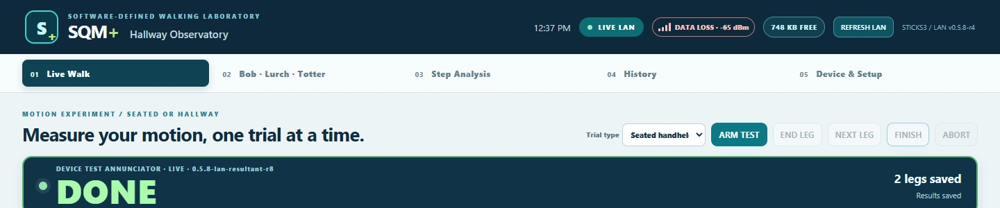
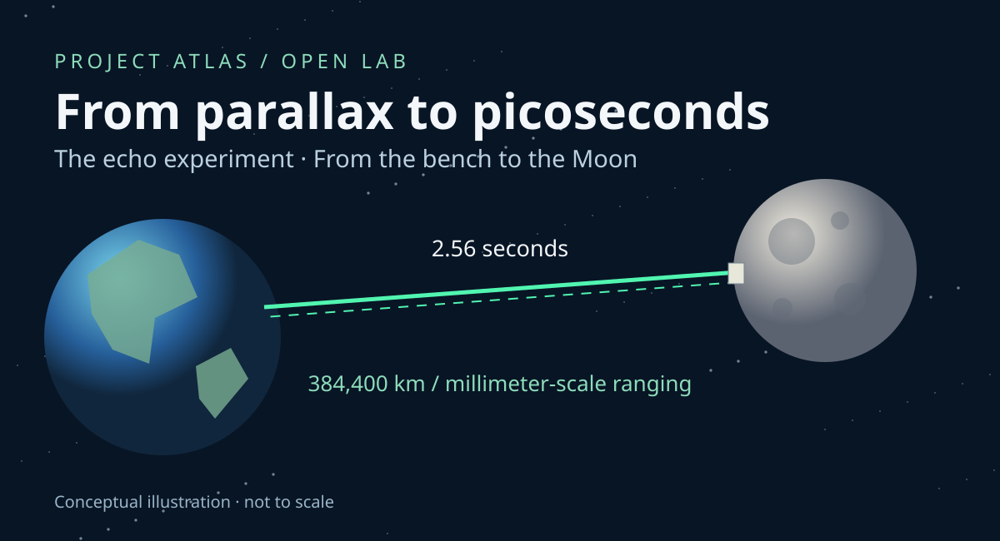
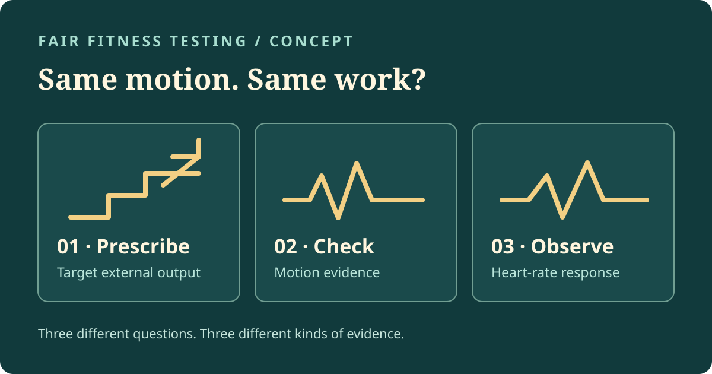

02 / instruments
Instruments & robotics
Build the instruments of inquiry
Explore this domainA WORKING ARCHIVE BY RANDALL S. YOUNG, Ed.S.
Explore the science, build the instruments, test the evidence. A lifetime of inquiry, made open and reproducible.



Experience before equation: ordinary phenomena measured first.

Open Lab · Astronomy & metrology
Apollo reflectors, a laser simulator and an Arduino echo experiment.


Optics · Calibration
Measure light transmission to estimate an unknown tea dilution.

Classroom inquiry
Invent a repeatable rule for rock shape and test what it misses.

Open Lab · Biology
Yeast, peroxide, gas collection, and 21 pages of illustrated guides.
Software-defined laboratory & robotics: inspectable hardware and browser tools.

Instrument workshop
Five wireless builds—voltmeter, frequency meter, scale, ToF ruler, thermometer.


ROBOT_EDU preview
Compare what a robot was told to do with what it actually did.
Measured human performance: gait quality and fair physical workload testing.

Gait metrology
Eleven marked meters, an independent clock, and a wearable under test.

Release preview
Prescribe physical work, confirm motion evidence, and watch heart rate separately.
Circuits to Genomes: architectural economy, peroxide continuity, and accountable inquiry.
Research portal · v1.2
Three working papers, computational tests, and companion archive.

Biochemical benchmark
One chemical reaction across diverse molecular architectures.
Open Lab · 21 pp. guides
Kitchen-table yeast & peroxide entry point with guides and Python templates.

Independent researcher and educator. Physical computing, STEM inquiry, instrumentation, human performance and comparative computing–biology research.
ORCID · GitHub · Idea index · Start here